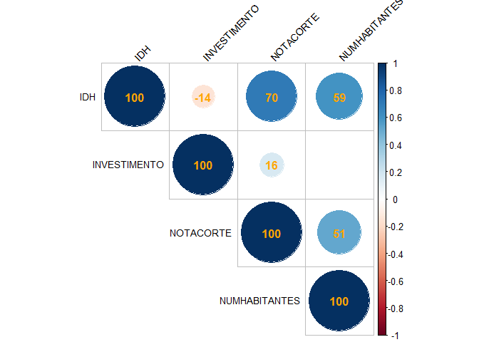
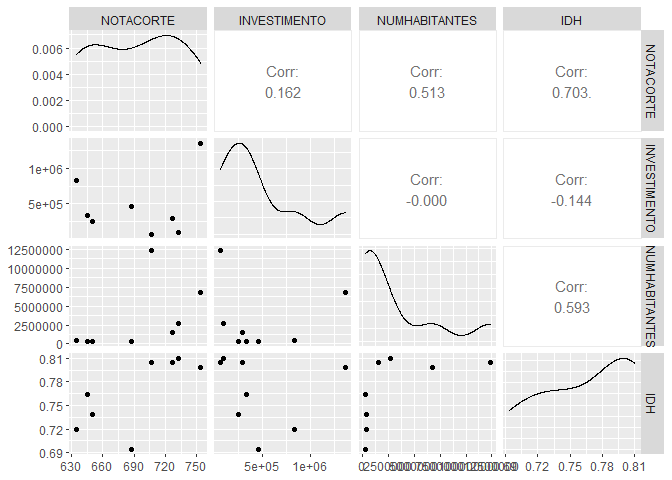
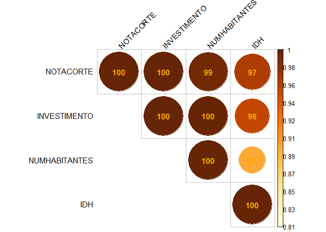
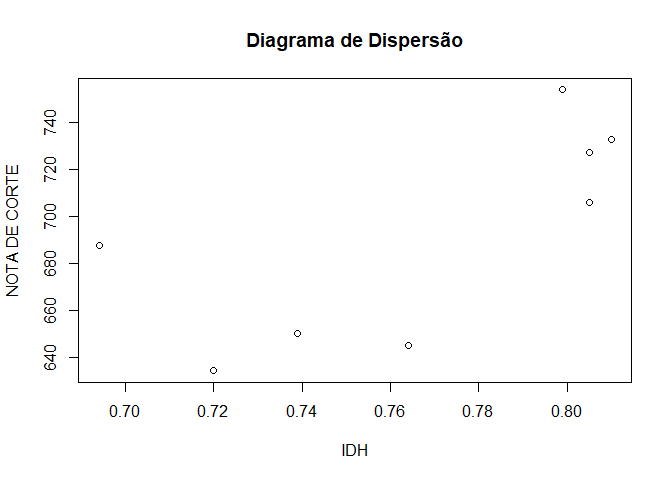
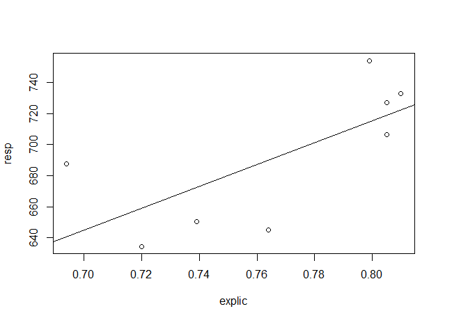

Nesta seção, estudamos a relação entre diferentes variáveis aplicadas à ciência de dados no R. Neste trabalho, investiguei a relação entre notas de corte para acesso ao curso de administração através do SiSU, investimentos educacionais, população e IDH. Foram coletadas 8 amostras através de dados públicos disponíveis na plataforma do SiSU, portal da transparência e IBGE.
A principal motivação é estudar se há relação direta entre dados das localidades e a concorrência para o curso de administração através do SiSU.
Os dados coletados foram obtidos através das seguintes fontes: * https://sisu.mec.gov.br/#/relatorio#onepage * https://cidades.ibge.gov.br * https://www.portaltransparencia.gov.br/funcoes/12-educacao?ano=2020
A partir daqui, iremos analisar a relação entre as variáveis. Inicialmente, vamos preparar o ambiente.
# Define o diretório de trabalho
#setwd("~Documents/Erich/GitHub/MAF_172")
# Instalando dependências
library(pacman)
p_load(char=c("DescTools","readxl","janitor", "psych", "corrr", "ggplot2", "dplyr", "caret", "corrplot","spatstat", "maptools", "gstat", "foreign", "geoR","moments","scatterplot3d","tcltk2", "sp", "rgdal", "raster", "doParallel", "GGally"))Faremos então a leitura dos dados que estão armazenados em um arquivo de texto (.txt).
# Importando os dados
dados = read.table("../dados_prova.txt", head=T)
str(dados)## 'data.frame': 8 obs. of 5 variables:
## $ NOTACORTE : num 754 706 733 727 688 ...
## $ INVESTIMENTO : int 1360782 65865 90000 293600 459714 337270 248592 835479
## $ NUMHABITANTES: int 6775561 12330000 2722000 1492530 278264 261501 343132 402912
## $ IDH : num 0.799 0.805 0.81 0.805 0.694 0.764 0.739 0.72
## $ CIDADE : chr "Rio de Janeiro" "São Paulo" "Belo Horizonte" "Porto Alegre" ...# Leitura dos dados importados
dados.rls = dados[1:4]
names(dados.rls)## [1] "NOTACORTE" "INVESTIMENTO" "NUMHABITANTES" "IDH"Vamos agora processar os dados obtidos de três formas, sendo duas delas através de correlação de matriz linear e a outra como correlação não linear.
# Processamento em paralelo
cl <- makePSOCKcluster(4)
registerDoParallel(cl)
# Aqui começa o procedimento
df2 <- cor(dados.rls, use = "na.or.complete")
corrplot(df2, order="alphabet", method="circle", tl.pos="td", type="upper",
tl.col="black", tl.cex=0.9, tl.srt=45,
addCoef.col="orange", addCoefasPercent = TRUE, diag = TRUE,
sig.level=0.995, p.mat = 1-abs(df2),insig = "blank")
# Aqui termina o procedimento
stopCluster(cl)Nessa análise, pudemos observar que a maior relação linear encontrada se dá entre a nota de corte e o IDH.
# Outra Matriz de Correlacao
cl <- makePSOCKcluster(4); registerDoParallel(cl)
# Aqui começa o procedimento
ggpairs(dados.rls)
# Aqui termina o procedimento
stopCluster(cl)Através dessa matriz, podemos ver como os dados se relacionam e o grau de correlação.
par(mfrow=c(1,1))
par(mar=c(8,4,6,4))
# Processamento em paralelo
cl <- makePSOCKcluster(4)
registerDoParallel(cl)
# Aqui começa o procedimento
# Função de Lopez-Paz (2013)
rdc <- function(x,y,k=20,s=1/6,f=sin) {
set.seed(313)
x <- cbind(apply(as.matrix(x),2,function(u)rank(u)/length(u)),1)
y <- cbind(apply(as.matrix(y),2,function(u)rank(u)/length(u)),1)
x <- s/ncol(x)*x%*%matrix(rnorm(ncol(x)*k),ncol(x))
y <- s/ncol(y)*y%*%matrix(rnorm(ncol(y)*k),ncol(y))
cancor(cbind(f(x),1),cbind(f(y),1))$cor[1]
}
# Tabela é o data.frame
tabela = dados.rls
correl_nao_linear <- function (tabela) {
c = c("peraser")
mcnl = matrix(nrow = ncol(tabela), ncol = ncol(tabela))
for (i in 1:ncol(tabela)) {
for (j in 1:ncol(tabela)) {
mcnl[i,j] = rdc(tabela[,i],tabela[,j])
}
}
mcnl =as.data.frame(mcnl)
colnames(mcnl) = colnames(tabela)
rownames(mcnl) = colnames(tabela)
return(mcnl)
}
par(mfrow=c(1,1))
cornl = correl_nao_linear(tabela)
corrplot(as.matrix(cornl),is.corr = F, method="circle", tl.srt=45,
tl.pos="lt", type="upper",tl.col="black", addCoefasPercent = TRUE,
sig.level=0.995, addCoef.col="orange")
# Aqui termina o procedimento
stopCluster(cl)Através dessa análise podemos concluir que as variáveis observadas possuem alto grau de correlação não linear, sendo as maiores delas a nota de corte com relação ao investimento e o investimento com relação ao número de habitantes.
Nesta seção, faremos uma simples regressão linear entre as variáveis IDH e NOTADECORTE. Foram escolhidas essas variáveis pois são as que possuem maior índice de correlação linear.
O código abaixo realiza o diagrama de dispersão dos referidos dados.
resp = dados.rls$NOTACORTE
explic = dados.rls$IDH
# Gerando o gráfico
par(mfrow=c(1,1))
plot(explic, resp, main="Diagrama de Dispersão",
xlab = "IDH", ylab = "NOTA DE CORTE") 
Com o código abaixo, faremos uma estimativa da função linear que melhor se adequa aos dados.
(rls = lm(resp~explic))##
## Call:
## lm(formula = resp ~ explic)
##
## Coefficients:
## (Intercept) explic
## 151.9 704.4Obtivemos portanto uma função do tipo \(f(x) = 704.4x + 151.9\). Sendo \(151.9\) a intersecção da reta com o eixo das ordenadas e \(704.4\) a taxa de variação, ou seja, a cada aumento de \(0.1\) no IDH, a nota de corte cresce, em média, \(70.44\).
O código abaixo mostrará a reta definida pela função acima plotada no gráfico de dispersão.
par(mar=c(6,4,4,4))
plot(explic, resp)
abline(rls)
text(3,90,expression("f(x) = 704.4x + 151.9"))
A reta não intercepta perfeitamente os pontos, entretanto é uma aproximação razoável para descrever as notas de corte em função do IDH.